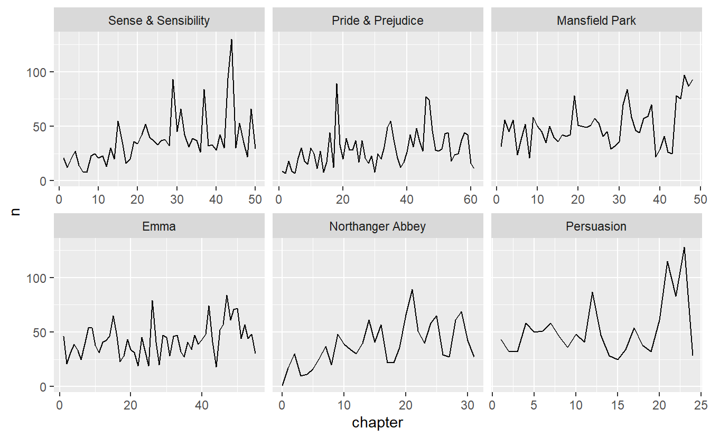
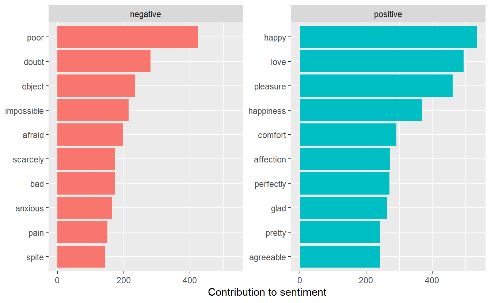
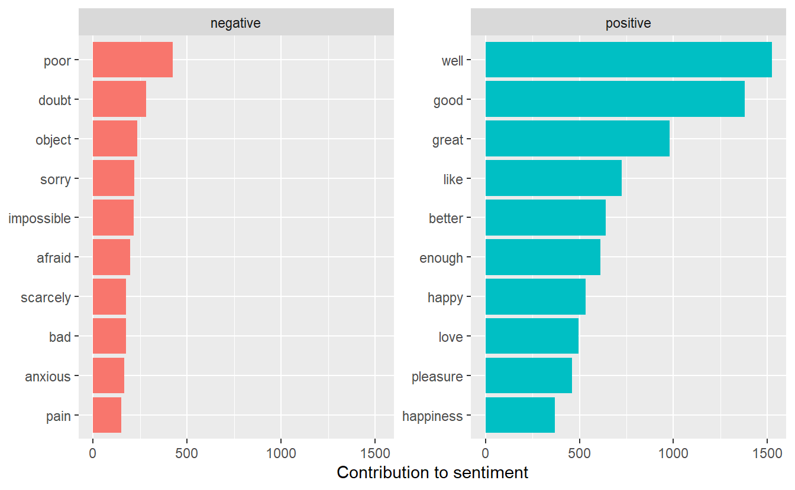

6 Tidy text mining from STAT 413 continued
Learning Objectives:
- Analyze sentiment as it changes through a text
- Graph word clouds
Resources:
Text Mining with R by Julia Silge and David Robinson.
6.1 Sentiment Analysis
Sections 2.1 - 2.3 in the book and this video
Naive approach: sentiment of each word and add them up for a given amount of text. This approach does not take into account word qualifiers like not, never, always, etc. Generally, if we add up over many paragraphs, the positive and negative words will cancel each other out. So, we are usually better off adding either by sentence or by paragraph.
There are several sentiment lexicons we can use:
- AFINN from Finn ?rup Nielsen,
- bing from Bing Liu and collaborators
- nrc from Saif Mohammad and Peter Turney
sentiments
#> # A tibble: 6,786 x 2
#> word sentiment
#> <chr> <chr>
#> 1 2-faces negative
#> 2 abnormal negative
#> 3 abolish negative
#> 4 abominable negative
#> 5 abominably negative
#> 6 abominate negative
#> # ... with 6,780 more rows
sentiments %>% arrange(word)
#> # A tibble: 6,786 x 2
#> word sentiment
#> <chr> <chr>
#> 1 2-faces negative
#> 2 abnormal negative
#> 3 abolish negative
#> 4 abominable negative
#> 5 abominably negative
#> 6 abominate negative
#> # ... with 6,780 more rows
get_sentiments("afinn")
#> # A tibble: 2,477 x 2
#> word value
#> <chr> <dbl>
#> 1 abandon -2
#> 2 abandoned -2
#> 3 abandons -2
#> 4 abducted -2
#> 5 abduction -2
#> 6 abductions -2
#> # ... with 2,471 more rows
get_sentiments("bing")
#> # A tibble: 6,786 x 2
#> word sentiment
#> <chr> <chr>
#> 1 2-faces negative
#> 2 abnormal negative
#> 3 abolish negative
#> 4 abominable negative
#> 5 abominably negative
#> 6 abominate negative
#> # ... with 6,780 more rows
get_sentiments("nrc")
#> # A tibble: 13,901 x 2
#> word sentiment
#> <chr> <chr>
#> 1 abacus trust
#> 2 abandon fear
#> 3 abandon negative
#> 4 abandon sadness
#> 5 abandoned anger
#> 6 abandoned fear
#> # ... with 13,895 more rowsSince the nrc lexicon gives us the emotion, we can look at words labelled as fear if we choose.
tidy_books <- austen_books() %>%
group_by(book) %>%
mutate(linenumber = row_number(),
chapter = cumsum(str_detect(text,
regex("^chapter [\\divxlc]",
ignore_case = TRUE)))) %>%
ungroup() %>%
# use word so the inner_join will match with the nrc lexicon
unnest_tokens(word, text)
# select only the words from the nrc lexicon that are "fear" words
nrcfear <- get_sentiments("nrc") %>%
filter(sentiment == "fear")
tidy_books %>%
filter(book == "Emma") %>%
inner_join(nrcfear) %>%
count(word, sort = TRUE)
#> # A tibble: 364 x 2
#> word n
#> * <chr> <int>
#> 1 doubt 98
#> 2 ill 72
#> 3 afraid 65
#> 4 marry 63
#> 5 change 61
#> 6 bad 60
#> # ... with 358 more rows6.2 Plot a sentiment by chapter
Watch this video
See if you can plot the fear by chapter.
fear_chapter <- tidy_books %>%
inner_join(nrcfear) %>%
group_by(book,chapter) %>%
count()
fear_chapter %>%
ggplot(aes(chapter, n)) +
geom_line() +
facet_wrap(~book, scales = "free_x")
What other sentiments are there in nrc that we could look at?
get_sentiments("nrc") %>%
group_by(sentiment) %>%
count()
#> # A tibble: 10 x 2
#> # Groups: sentiment [10]
#> sentiment n
#> <chr> <int>
#> 1 anger 1247
#> 2 anticipation 839
#> 3 disgust 1058
#> 4 fear 1476
#> 5 joy 689
#> 6 negative 3324
#> # ... with 4 more rowsNow, let’s use 80 line blocks and use bing to categorize each word as positive or negative. We will spread them to get the counts in separate columns and then add a column with the net = positive - negative
janeaustensentiment <- tidy_books %>%
inner_join(get_sentiments("bing")) %>%
count(book, index = linenumber %/% 80, sentiment) %>%
spread(sentiment, n, fill = 0) %>%
mutate(sentiment = positive - negative)
janeaustensentiment %>%
ggplot(aes(index, sentiment, fill = book)) +
geom_col(show.legend = FALSE) +
facet_wrap(~book, ncol = 2, scales = "free_x")
6.3 Modifying what contributes to sentiment analysis
Section 2.4 in online book and thisvideo
We should probably look at which words contribute to the positive and negative sentiment and be sure we want to include them.
bing_word_counts <- tidy_books %>%
inner_join(get_sentiments("bing")) %>%
count(word, sentiment, sort = TRUE) %>%
ungroup()
bing_word_counts
#> # A tibble: 2,585 x 3
#> word sentiment n
#> * <chr> <chr> <int>
#> 1 miss negative 1855
#> 2 well positive 1523
#> 3 good positive 1380
#> 4 great positive 981
#> 5 like positive 725
#> 6 better positive 639
#> # ... with 2,579 more rows
# visualize it
bing_word_counts %>%
group_by(sentiment) %>%
top_n(10) %>%
ungroup() %>%
mutate(word = reorder(word, n)) %>%
ggplot(aes(word, n, fill = sentiment)) +
geom_col(show.legend = FALSE) +
facet_wrap(~sentiment, scales = "free_y") +
labs(y = "Contribution to sentiment",
x = NULL) +
coord_flip()
Not what we want for Jane Austen novels!! Miss is probably not a negative word, but rather refers to a young girl. Two approaches to fix this:
- take the word miss out of the data before doing the analysis or
- change the sentiment lexicon to no longer have “miss” as a negative
First we will remove the word miss by adding it to the stop words.
custom_stop_words <- bind_rows(data_frame(
word = c("miss"),
lexicon = c("custom")),
stop_words)
custom_stop_words
#> # A tibble: 1,150 x 2
#> word lexicon
#> * <chr> <chr>
#> 1 miss custom
#> 2 a SMART
#> 3 a's SMART
#> 4 able SMART
#> 5 about SMART
#> 6 above SMART
#> # ... with 1,144 more rows
# Now, let's redo with the new stop words.
tidy_books_no_miss <- austen_books() %>%
group_by(book) %>%
mutate(linenumber = row_number(),
chapter = cumsum(str_detect(text,
regex("^chapter [\\divxlc]",
ignore_case = TRUE)))) %>%
ungroup() %>%
# use word so the inner_join will match with the nrc lexicon
unnest_tokens(word, text) %>%
anti_join(custom_stop_words)
bing_word_counts <- tidy_books_no_miss %>%
inner_join(get_sentiments("bing")) %>%
count(word, sentiment, sort = TRUE) %>%
ungroup()
bing_word_counts
#> # A tibble: 2,554 x 3
#> word sentiment n
#> * <chr> <chr> <int>
#> 1 happy positive 534
#> 2 love positive 495
#> 3 pleasure positive 462
#> 4 poor negative 424
#> 5 happiness positive 369
#> 6 comfort positive 292
#> # ... with 2,548 more rows
bing_word_counts %>%
group_by(sentiment) %>%
top_n(10) %>%
ungroup() %>%
mutate(word = reorder(word, n)) %>%
ggplot(aes(word, n, fill = sentiment)) +
geom_col(show.legend = FALSE) +
facet_wrap(~sentiment, scales = "free_y") +
labs(y = "Contribution to sentiment",
x = NULL) +
coord_flip()
A different approach would be to leave it in the analysis, but remove the word “miss” from the bing sentiment lexicon.
bing_no_miss <- get_sentiments("bing") %>%
filter(word != "miss")
bing_word_counts <- tidy_books %>%
inner_join(bing_no_miss) %>%
count(word, sentiment, sort = TRUE) %>%
ungroup()
bing_word_counts
#> # A tibble: 2,584 x 3
#> word sentiment n
#> * <chr> <chr> <int>
#> 1 well positive 1523
#> 2 good positive 1380
#> 3 great positive 981
#> 4 like positive 725
#> 5 better positive 639
#> 6 enough positive 613
#> # ... with 2,578 more rows
# visualize it
bing_word_counts %>%
group_by(sentiment) %>%
top_n(10) %>%
ungroup() %>%
mutate(word = reorder(word, n)) %>%
ggplot(aes(word, n, fill = sentiment)) +
geom_col(show.legend = FALSE) +
facet_wrap(~sentiment, scales = "free_y") +
labs(y = "Contribution to sentiment",
x = NULL) +
coord_flip()
- Exercise 3: Let’s look at how the sentiment changes across the length of a book by looking at 80 lines at a time. Compare how sentiment changes in Victor Hugo’s Les Miserables and Charles Dickens’ A Tale of Two Cities. Look at negative vs positive sentiment. Then pick a sentiment like joy or anger or fear or … and see how that sentiment compares.
6.4 WordCloud plots
Sections 2.5 - 2.7 in book and this video
We can do wordcloud plots where the frequency of the word in the text determines the size of the word in the wordcloud. We can also color the words based on the sentiment.
library(wordcloud)
tidy_books %>%
anti_join(stop_words) %>%
count(word) %>%
with(wordcloud(word, n, max.words = 100))
library(reshape2)
tidy_books %>%
inner_join(bing_no_miss) %>%
count(word, sentiment, sort = TRUE) %>%
acast(word ~ sentiment, value.var = "n", fill = 0) %>%
comparison.cloud(colors = c("red", "blue"),
max.words = 100)